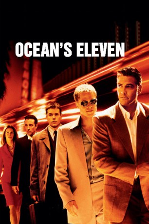
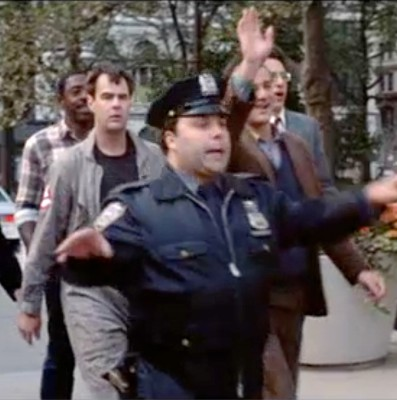
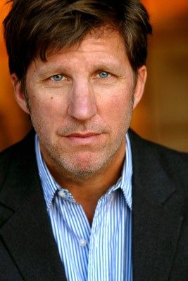
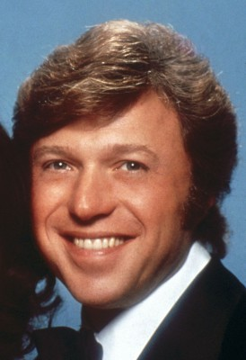
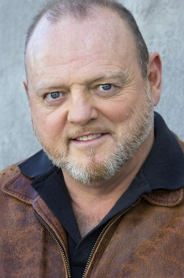
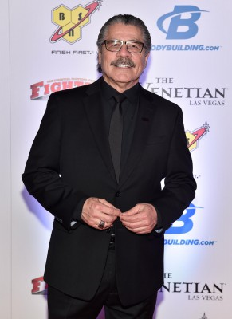
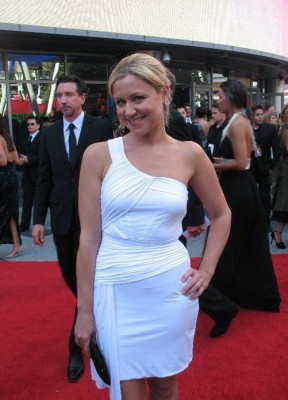
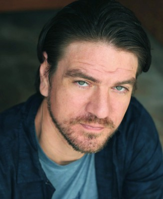

#825 Ocean's Eleven
 
 IMDB-Wertung: 7.8 / 10
IMDB-Wertung: 7.8 / 10  Metascore: 74
Metascore: 74 
Danny Ocean lässt nichts anbrennen. Vor nicht einmal 24 Stunden ist der charismatische Gauner auf Bewährung aus dem Gefängnis in New Jersey entlassen worden, und schon plant er seinen nächsten Coup. Dabei befolgt er drei Regeln: Es fließt kein Blut; niemand wird beklaut, der es nicht auch verdient hat; spiel deinen Einsatz, als ob du nichts zu verlieren hast. Nach diesem Motto inszeniert Danny den raffiniertesten Casino-Raub der Geschichte.
Jahr: 2001
Dauer: 116 Minuten
FSK: 12
Land: USA Studio: Warner Bros.Tonspuren: DD5.1 - ,
Untertitel:
Auflösung: 1080p (1920x800) Größe: 10240 MB
Genre: Krimi, Thriller
Regisseur:  Steven Soderbergh
Steven Soderbergh
Drehbuch: George Clayton Johnson, Jack Golden Russell, Harry Brown, Charles Lederer, Ted Griffin
Soundtrack: David Holmes
Darsteller:
 George Clooney als Danny Ocean
George Clooney als Danny Ocean- Cecelia Ann Birt als Board Member #1
 Bernie Mac als Frank Catton
Bernie Mac als Frank Catton Brad Pitt als Rusty Ryan
Brad Pitt als Rusty Ryan- Mark Gantt als Bartender
 Tim Perez als Security Guard
Tim Perez als Security Guard Elliott Gould als Reuben Tishkoff
Elliott Gould als Reuben Tishkoff-  Frank Patton als Lockbox Carrier
 Casey Affleck als Virgil Malloy
Casey Affleck als Virgil Malloy Scott Caan als Turk Malloy
Scott Caan als Turk Malloy Eddie Jemison als Livingston Dell
Eddie Jemison als Livingston Dell- Tim Snay als FBI Man #2
 Miguel Pérez als Explosives Cop
Miguel Pérez als Explosives Cop- Shaobo Qin als Yen
 Carl Reiner als Saul Bloom
Carl Reiner als Saul Bloom- Lennox Lewis als Boxing Opponent
- Wladimir Klitschko als Boxing Opponent
 Matt Damon als Linus Caldwell
Matt Damon als Linus Caldwell- Barry Brandt als Technician #1
- William Patrick Johnson als Technician #2
-  Robert Peters als Eye-in-the-Sky Technician #1
 David Jensen als Eye-in-the-Sky Technician #2
David Jensen als Eye-in-the-Sky Technician #2 Andy Garcia als Terry Benedict
Andy Garcia als Terry Benedict- Michael DeLano als Casino Manager, Walsh
 Julia Roberts als Tess Ocean
Julia Roberts als Tess Ocean Robin Sachs als Seller
Robin Sachs als Seller J.P. Manoux als Aide-de-Camp
J.P. Manoux als Aide-de-Camp Jerry Weintraub als High Roller
Jerry Weintraub als High Roller Henry Silva als Boxing Spectator
Henry Silva als Boxing Spectator- Eydie Gormé als Boxing Spectator
 Angie Dickinson als Boxing Spectator
Angie Dickinson als Boxing Spectator-  Steve Lawrence als Boxing Spectator
 Wayne Newton als Boxing Spectator
Wayne Newton als Boxing Spectator-  Rusty Meyers als Security Officer #1
 Joe Coyle als Security Officer #2
Joe Coyle als Security Officer #2- Scott L. Schwartz als Bulldog, the Bruiser
- John Robotham als Uzi-Carrying Guard #1
- Vincent M. Ward als Uzi-Carrying Guard #2
- Christie Campagna als Woman in Casino , uncredited
- Derek Sean Carlton als Fight Spectator , uncredited
 Don Cheadle als Basher Tarr , uncredited
Don Cheadle als Basher Tarr , uncredited- Holly Marie Combs als Holly , uncredited
- Jeremy Dunn als Dealer , uncredited
-  Jacob 'Stitch' Duran als Wladimir Klitschko's Cutman , uncredited
- Patrick Fullerton als Boxing Spectator , uncredited
-  Jaime Gallagher als Diner , uncredited
- Joss Gomez als Casino Dealer , uncredited
 Topher Grace als Topher Grace , uncredited
Topher Grace als Topher Grace , uncredited-  Charles Halford als Bellagio Security Guard , uncredited
 Joshua Jackson als Himself , uncredited
Joshua Jackson als Himself , uncredited
Datei: X:\5-Pentalogie(A-Z)\Oceans 11-12-13\Ocean's Eleven (2001, FSK12, 1920x800).mkv seit 30.03.2015
Festplatte: HD Collection-3(N-Z)-6(A-Z)
 Es gibt insgesamt 8 Filme in der Gruppe '5-Pentalogie(A-Z)\Oceans 11-12-13'
Es gibt insgesamt 8 Filme in der Gruppe '5-Pentalogie(A-Z)\Oceans 11-12-13'